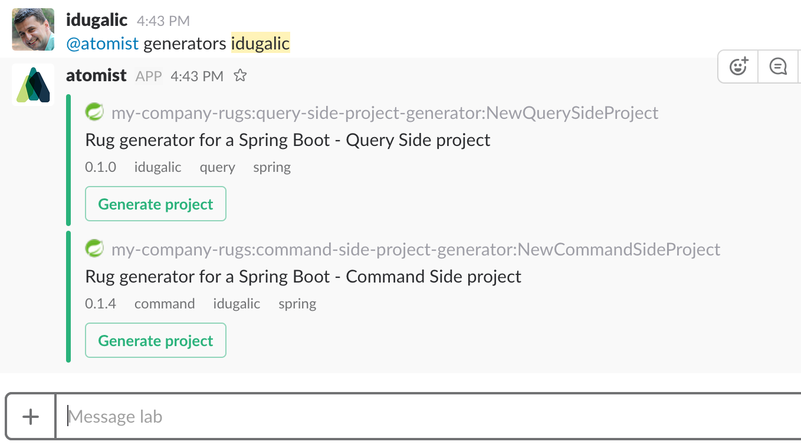
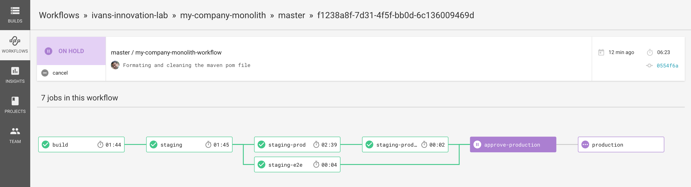

Bring your development flow into Slack
See commits, issues, and PRs in Slack, and comment on an issue, merge a PR, or create a release right then and there, without
breaking your stride.
Read more ...

The key pattern introduced in continuous delivery is the deployment pipeline
In the deployment pipeline pattern, every change in version control triggers a process (usually in a CI server)
which creates deployable packages and runs automated unit tests and other validations such as static code analysis.
This first step is optimized so that it takes only a few minutes to run. If this initial commit stage fails,
the problem must be fixed immediately—nobody should check in more work on a broken commit stage.
Read more ...
